Austin, Texas
Harvest Mission Community Church of Austin
A church impacting the University of Texas campus and the city of Austin — from students to families.
Visit the Austin church
Visit one of our churches to experience who we are.
Austin, Texas
A church impacting the University of Texas campus and the city of Austin — from students to families.
Visit the Austin churchHong Kong
An international church planted in 2015 when a team of twenty came to the city.
Visit the Hong Kong churchAs a family, we have committed to our 10-10 vision — to plant 10 churches in 10 cities in the next 10 years.
Read the 10 Year Commitment